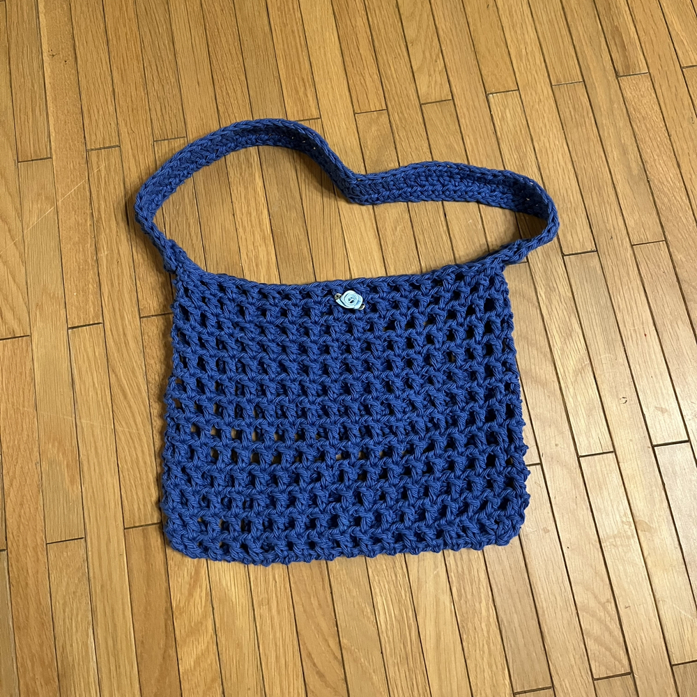
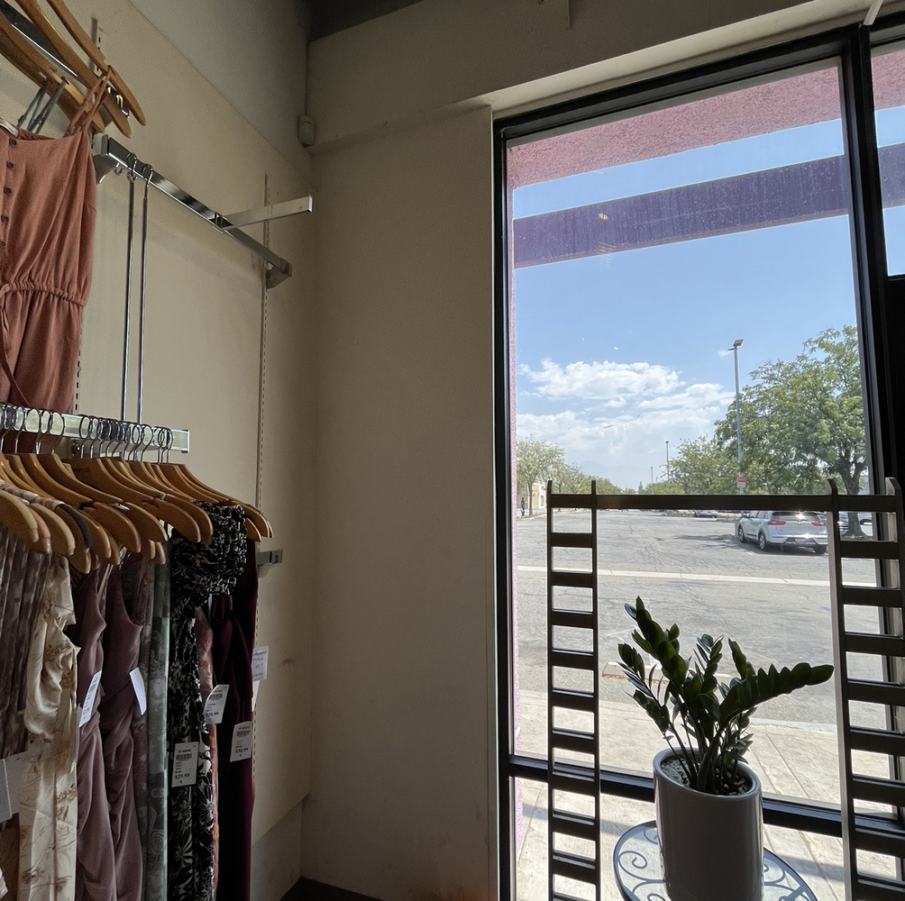
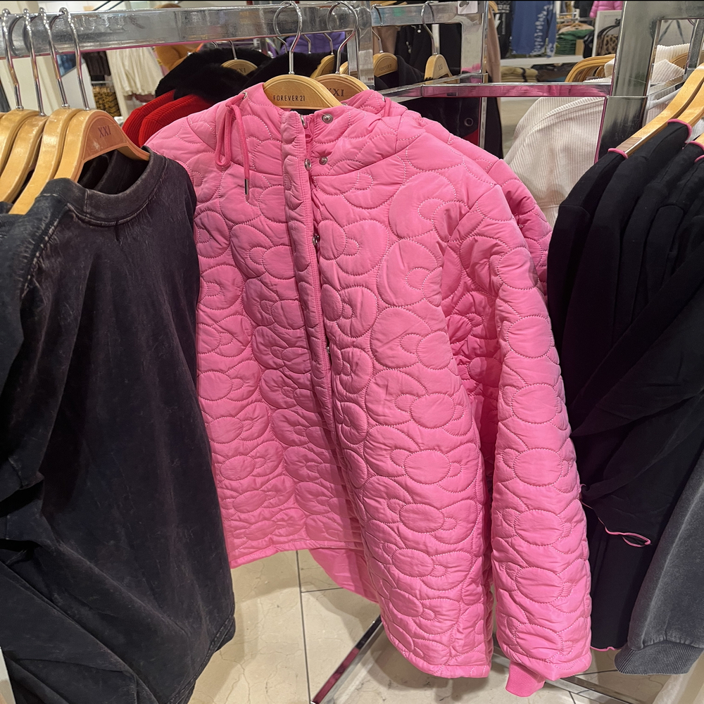
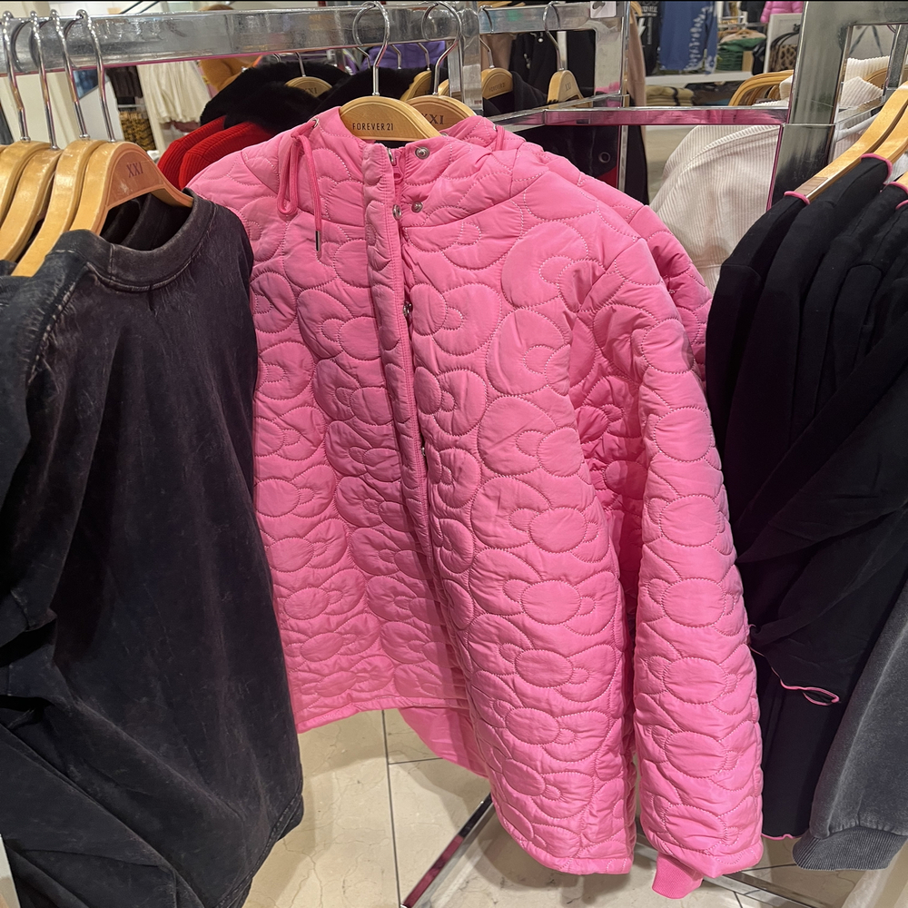
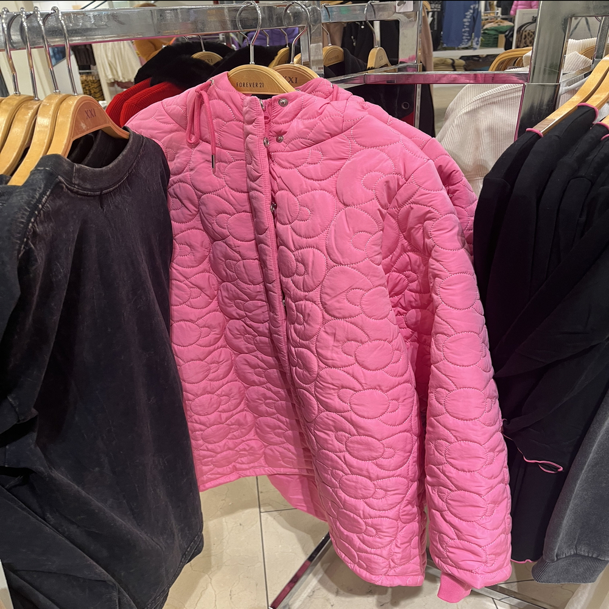
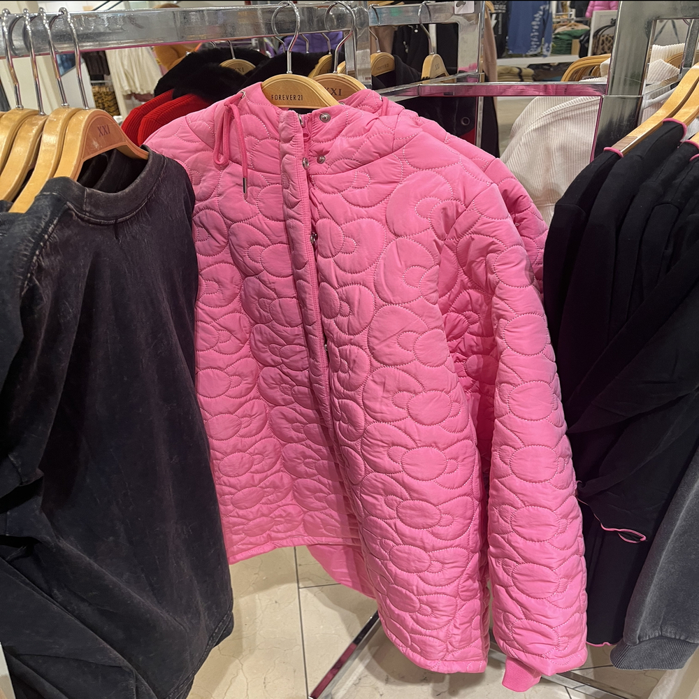

Portfolio


 


I am currently into my second year as a Sociology major at the Univeristy of California, Riverside. I work a part-time job at a retail store and try to maintain a balance between work and school. Although the work at the retail store does not connect directly to social work, the various skills of learning how to deal with people give me modest insight into the field.
During my free time, I like to crochet different items for friends and family! Other times I will watch 'The Office,' and practically have the whole show memorized. If not the first two things, I will most likely be scrolling on TikTok until I end up falling asleep with my phone on.
I am a Korean-American with two older sisters and a dog that we do not know the breed of. My favorite holiday is Christmas because of all the warmth and joy that everyone shares, especially when seeing all the decorations put up.
• Assisted teachers with grading and one-on-one tutoring with their students
• Helped students with homework problems
• Taught various lessons regarding 3rd math and english
• Created and packaged clothing pieces
• Inventory check and made sure to keep the place clean
• Input items into the system based on invoices
• Kept the store clean and organized
• Train new employees
